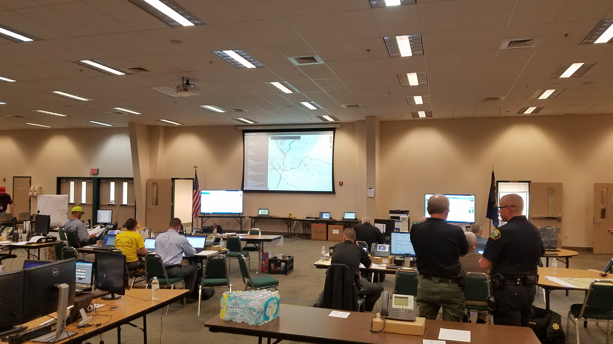
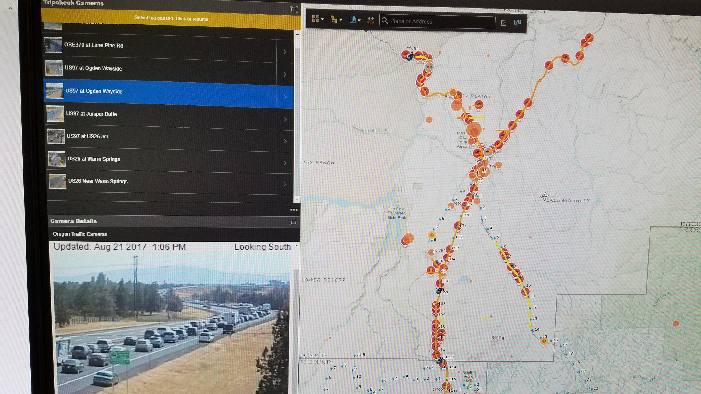

Deschutes County GIS
deschutes.org/socialmedia
Shad Campbell
@shadcampbell
special thanks to: Melinda, Geri, Evan, Rachel, and John
#ApocEclipse
 +250,000
+250,000
#ApocEclipse

Multi-Agency Coordination Center
aka the "MACC"
- Firefighting, law enforcement, public works, public health, NGO's, private sector, and information technology.
- Crook, Deschutes, Jefferson Counties (Wheeler, Gilliam, Grant, Baker, and Harney)
- St. Charles HS, BNSF, TacSat, Project Wildfire
- ODOT, ODF, OSP, OEM, OHA, 211
- FEMA, Red Cross, BLM, USFS, DHS, FBI, NWS
- Firefighting, law enforcement, public works, public health, NGO's, private sector, and information technology.
- Crook, Deschutes, Jefferson Counties (Wheeler, Gilliam, Grant, Baker, and Harney)
- St. Charles HS, BNSF, TacSat, Project Wildfire
- ODOT, ODF, OSP, OEM, OHA, 211
- FEMA, Red Cross, BLM, USFS, DHS, FBI, NWS
Inside the MACC
MACC Organization Chart
Concerns
- Traffic - ability to deliver emergency services
- Fires - natural or human caused
- Health outbreaks
- Communications - cell capacity
- Shortages - gas/food/water
- Hospitals - capacity/services
- Shelters - capacity
- Weather
Bumper to Bumper
Resources
- Blackhawk helicopter - National Guard
- Airlink/LifeFlight - each additional bird
- ODOT additional signage
- Cell providers - additional COWS
- Ambulances - contractors
- Urgent Care facilities - additional hours
Data Resources
- Live traffic information
- HERE/Esri
- Waze - Connected Citizens Program partner
- Heliports
- Water draft sites
- Gathering places
- Gas stations - card lock
- Weather - Accuweather and ENTLN
GIS role
- Paper
- Digital
- IT - multiple networks - data sharing
- ArcGIS Server
- ArcGIS Online
- Operations Dashboard
- Web AppBuilder